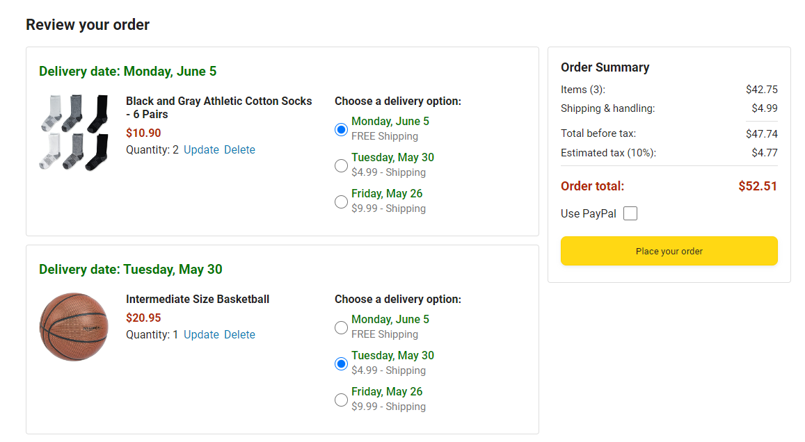

JavaScript is used for building websites.
To build a website you need 3 technologies:
JavaScript essentially gives instuctions to a computer and the computer follows the instructions.
First install a web browser (Like Google Chrome). Google Chrome is the recommended browser.
Then go to: https://supersimple.dev/js-basics/Once at this website go to a blank area of the webpage and right click, then choose inspect.
Once the code appears at the bottom Select the Console tab.
If the Console doesn't show up you can click on the three dots at the bottom right and choose the Dock to bottom icon (the grey box will have the white area in the top center).
In the Console type:
alert('hello');
The Code must look exactly like above to work.
When you press Enter it will display a message saying Supersimple.dev says hello.
Changing the hello in the alert(''); will allow you to display other messages.
Although supersimple.dev is the website being used you can do this on any website.
Code
Running the code
Programming lanuages
Programming language examples:
JavaScript Code
Modifying the Webpage
Syntax
You can do math in the Console
In the Console type 2 + 2
Under the code we just typed will appear the number 4.
When you press Enter the code will run and 4 will be calculated.
In addition to addition you can also use other kinds of arithmetic like subtraction.
Try typing 5 - 3 in the Console and pressing enter.
You will get the answer of 2.
You can also make temporary changes to an already existing webpage.
type in to the Console:
document.body.innerHTML = 'hello';
This will remove the current information on the page and replace it with whatever is in between the ' ' (in this case hello).
This is an example of modifying the webpage.
Syntax rules must be followed when programming otherwise the computer won't understand your code.
For this section go to:
Visit: https://supersimple.dev/js-basics/This website is an ecommerce website where you can buy products and looks similar to Amazon.
I did not make this website but following along you will learn to build a website like this.
After finding this website click on the shopping cart icon (See below image).
Once inside the shopping cart notice the order Summary and how all items in the cart are added up and the tax is added to get the Order total.
This will be the section we will be working on in this section.
We will first open the Console by right clicking on a blank area of the webpage and click inspect.
Next click the Console tab.
We previously learned about adding and substracting using JavaScript using the Console. You can also multiply using the asterisk * (star shaped) key.
2 * 4 for instance will give you 8.
You can also Divide using a forward slash / character.
8 / 4 for instance will give you 2.
Math in JavaScript is very similar to how math is normally written.
You can also do multiple numbers like 2 + 2 + 2 to equal 6
JavaScript can also work with decimal numbers.
2.5 * 2 would equal 5 for instance.
Now check in the cart on the supersimple.dev website
The cart should have 2 packages of socks (6 Pairs) and 1 Intermediate Size Basketball.
If these items are missing try reloading the website using the information from above.
You can also re-add these products to the cart if needed.
First lets calculate the cost of the products before shipping and taxes are added in.
In the cart this number will be the $42.75 in the Order Summary section next to the Items (3):
To calculate this value in JavaScript we simply need to add together the cost of the products.
Lets first start with the cost of the socks.
The socks cost 10.90
There are 2 packages of socks though so it would be:
10.90 * 2 for the socks.
We still need to add the cost of the Basketball which is 20.95.
So the socks and the Basketball would look like:
10.90 * 2 + 20.95 In the Console.
Press Enter and you should get 42.75
This is the same number as the amount in the Order Summary section of the Cart at the top of the page.
Now we will add in the shipping cost.
In the Order Summary you will notice the Shipping & handling: with $4.99 next to it.
We will be adding this 4.99 to our 42.75 in the Console
First type out the 10.90 * 2 + 20.95 again but do not press enter.
Then enter a plus sign + and the 4.99 for shipping.
You should now have:
10.90 * 2 +20.95 + 4.99 in your Console.
Now press Enter and you should get 47.74
This number matches the Total before tax: section amount in the Order Summary.
Before we Continue we need to focus on a concept called the Order of Operations.
Adding, Subtracting, Mutliplying, and Dividing are Operations.
+, -, *, and / are called Operators.
Typically multiplication and division are done first (* , /), addition and subtraction are done after this (+, -).
This is known as the order of operation. JavaScript also follows the order of operations.
In JavaScript the order of operations is also known as operator precedence.
Multiply and divide have the same priority (meaning one is not done automatically before the other).
Add and subtract also have the same priority.
If two operators have the same priority it will calculate from left to right.
You can use brackets to change what portion of the calcuation is done first.
Brackets have the highest priority and come before multiplication and division.
Try typing out 2 + 3 * 5 and press Enter.
You should get 17 since the 3 * 5 will calculate first then add the 2.
Now try (2 + 3) * 5 and press Enter.
You will notice that the 2 + 3 in the brackets added first this time before it was multiplied making the answer 25 this time.
Order of Operations
Brackets start with an opening bracket and close with a closing bracket.
The calcuation goes in between the opening and closing brackets.
For the next part remove all the items in the shopping cart.
Next go to the home page by clicking the top left amazon symbol.
Now add one Basketball by clicking the Add to Cart under the product.
Then change the number of Adult Plain Cotton T-Shirt - 2 Pack to 2 using the drop-down menu and add them to the cart.
Go back to the cart (click on the cart in the top right (should show a 3 in it)).
Right click and choose Inspect.
The right side of the checkout should show the cost of the three new items in the Order Summary.
The "Items (3):" line should show a new amount of $36.93
To calculate this amount using JavaScript code first go to the Console tab (Right Click and choose Inspect if you haven't yet).
First type in the cost of the Basketball which is 20.95
Then type the plus mark + and the cost of the T-shirts 7.99
Since there are two T-Shirt Packs you need to multiply by two * 2
You should now have:
20.95 + 7.99 * 2
When you press Enter it will calculate the total which is 36.93 Which is the same as the "Items (3):" line.
Notice that the multiplication happened before the addition because of the order of operations.
Next we will want to figure out how to calculate the "Estimated tax (10%):" line.
To calculate percentages we need to understand how percentages work.
Percentages are based on how much of 100 something would represent.
1% for instance is 1 out of 100 or 1 divided by 100 (1/100)
So 10% is 10/100
10% or 10/100 is equal to 0.1
So to calculate 10% we just need to multiply the answer we have in the Console by 0.1
Type in the Console:
36.93 * 0.1
Now press Enter and you will get 3.693
You will notice that this number is similar to the amount calculated in the "Estimated tax (10%):" line.
The number we calculated has a 3 at the end but because that is less then even one cent the three is dropped From the "Estimated tax (10%):" line.
The cost in the "Estimated tax (10%):" line has been rounded down and that is something that we will go over later in this lesson.
If you wanted to do the calcuation for the individual items and then multiply it by 0.1 you might get the incorrect tax amount without following the order of operations.
Remember that multiply comes before addition.
Therefore if you did:
20.95 + 7.99 * 2 * 0.1
You would get the wrong amount. The addition in this case needs to be done prior to multiplying by 0.1.
To fix this you will want to include brackets since brackets come before multiplication and division in the order of operations.
You should instead write it this way:
(20.95 + 7.99 * 2) * 0.1
This would give you the correct tax amount.
In Math numbers that aren't fractions or don't contain decimals are called whole numbers.
1,2,3,4,5,6,7,8,9,10,... are examples of whole numbers.
In programming however, we call whole numbers integers.
In programming numbers with decimals are called floating point numbers (or floats).
1.1, 1.2, 2.1, 3.4, ... are examples of folating point numbers.
Computers have a problem working with floats (floating point numbers).
You can see this problem if you type in the Console 0.1 + 0.2
Instead of giving you 0.3 which would be the expected answer it gives a 0.3 followed by many zeros then a four.
Although this is very close to 0.3 it is slightly off.
This issue is common in other programming languages as well.
This problem is a result of the way computers store numbers.
Computers can only store zeros and ones.
For integers the computer can use many zeros and ones to store the number.
10 can be stored as 1010 for instance.
For decimal numbers or floats the computer can't store the number properly.
When the computer tries to store 0.2 in binary the number will be similar to 0.2 but will result in something like:
0.1999969482421875
The computer tries to store a number close to 0.2 but the number it stores will never reach 0.2 and will be a tiny amount less then 0.2
There are some floats that the computer can store without any issues.
0.25 for instance can be stored accurately without any issue.
When calculating money we want to avoid any inaccuracies.
Now go into the Cart.
Make sure the cart has 1 Basketball with free shipping and one Adults Plain Cotton T-shirt 2 Pack (Quantity: should be 1).
To change the number of t-shirts click Update and change the Quantity to 1 then click save.
The T-shirt should also have free shipping selected.
Now we will calculate the number at the top next to Items (2):
In the console add the cost of the Basketball to the T-shirt package:
20.95 + 7.99
When you press Enter, Because of the floating numbers (the decimals) the value will be inaccurate.
To avoid these issues the best practice is to calculate in cents instead of dollars.
So instead of 20.95 we will calculate 2090 since that is how many cents 20 dollars and 90 cents is.
You will aslo need to turn the end value from cents back into dollars though so the total will need to be divided by 100.
Remember we will want the addition to occur first so first we surround the addition of 2095 and 799 with brackets.
So the new calcuation should be:
(2095 + 799) / 100
If you type this into the console and press Enter you should get the same number as the Items (2): section of the Order Summary.
Important lessons:
Rounding a number means changing a decimal or fraction to the whole number (integer) closest to it.
To round a number you can use the following code in the Console:
Math.round()
Make sure the M in Math is capitalized since JavaScript is case sensitive.
Try typing a number between the brackets in the console like:
Math.round(5.3)
This will round the number down to 5.
Now if you try:
Math.round(5.6)
It will round up to 6.
Now in the cart we will add the tax up again but use rounding to get the exact tax shown in the Order Summary.
In the console put the cost of the items in cents surrounded by brackets:
(2095 + 799)
Then we will multiply by the tax percent or 0.1.
(2095 + 799) * 0.1
We need to surround the whole thing by addtional brackets to divide by 100 and convert back into dollars.
((2095 + 799) * 0.1) / 100
When you have brackets inside of brackets the innermost brackets get calculated first.
If we calculate ((2095 + 799) * 0.1) / 100 in the console it will give us 2.894
This is close to the Estimated tax (10%): section but the value we have includes a value that is less then even on cent (the 4 at the end).
Copy the ((2095 + 799) * 0.1) / 100 and paste back into the console.
We don't want to round the whole equastion ((2095 + 799) * 0.1) / 100 since that would turn 2.894 into 3. We just need to round the ((2095 + 799) * 0.1) part.
Rounding ((2095 + 799) * 0.1) would give us 289 which is the number of cents.
To round like this type in the console:
Math.round((2095 + 799) * 0.1)
We still need to convert the answer back into dollars so you will need to divide by 100:
Math.round((2095 + 799) * 0.1) / 100
This will give you 2.89 which is exactly the value next to Estimated tax (10%): in the Orders Summary section
Go to Google.com (or open the Chorme Web Browser).
When you search you always want to search for what you're trying to do.
For searching for how to round a number you would search:
JavaScript how to round a number
Then you press Enter.
Sometimes the first result at the top is the answer you were looking for.
Sometimes though you need to scroll down to the other results to find what you are looking for.
A lot of the results will give you additional information about the code such as a description of what the code does and examples for how to use the code.
You may not understand all the code results you get in your results. Just focus on the pieces of code that look familiar and use that portion in your own code.
You don't have to understand every bit of code you see online.
As you go through this document you will start to understand more of what you see.
A.I. Tools are also available to help return code results.
The below tool is a popular A.I. tool option (be mindful the code results may have errors):
https://chat.openai.com/
In this section we will be going over text data.
Return to the Checkout page.
We will be filling out the text under the Order Summary (like Items:, Shipping & handling:, Total before tax:, etc.).
You will also need the console open (if not right click, choose Inspect, and choose the console tab).
In JavaScript text (words and sentences) are called strings.
Last time we went over Numbers.
Numbers and Strings are two different types of values.
To create a string first type a single quote followed by the word and another single quote.
Example:
'hello'
If you type in 'hello' and press Enter it will output 'hello'
In the first lesson we went over:
alert('hello');
This creates a pop-up that says hello.
Inside the alert() brackets we incldued the string 'hello'.
It's this string that popped up Enter was pressed.
There are syntax rules for string that need to be followed:
You can check what kind of value something is (like Numbers or Strings) using the following code:
typeof
followed by the value you are testing.
Example:
typeof 2
will return 'number' since the value type is that of a number.
Doing:
typeof 'hello'
Will instead return 'string' as the value type.
We will now be creating the text in the Order Summary section of the Cart.
First make sure you have one Basketball in your cart with free shipping and one Aults Plain Cotton T-Shirt 2 pack with free shipping.
The first text we will create is the cost of the Items (2): in the order summary.
We need to add a dollar sign to the cost of the products.
Insted of just a number the cost will be text.
One way to create the text is to type the amount directly surrounded by single quotes.
Example:
'$28.94'
It is better to use math to calculate this number.
The dollar sign however still needs to be a string (text).
Remember we can use the plus sign with a string to concatenate strings.
Also remember that if you add a string with numbers JavaScript will automatically convert the number into a string.
So if you have the dollar sign as a string and tried concatenating with a number you would end up with only a string value.
Further if you tried adding a number on at the end it would instead be concatenated as it would also be automatically turned into a string.
Example:
'$' + 20.95 + 7.99
Woulkd give you the string value:
'$20.957.99'
The 20.95 was concatenated with insted of added to the 7.99
So what we need to do instead is make JavaScript calculate the total before concatenating with the dollar sign.
Strings also follow the order of operations.
This means we can use brackets to make JavaScript do the calcuations first.
Example:
'$' + (20.95 + 7.99)
This will result in:
'$28.939999999999998'
This does add the values but has the problem of having way too many digits and is therfore inaccurate.
If you remember calcuations with floats can lead to inaccuracies.
As you may remember the best practice with money is to calculate in cents and convert back to dollars afterwards (by dividing by 100).
Example:
'$' + (2095 + 799) / 100
This will result in the value of:
'$28.94' Which is the same as the Items (2): section value in the Order Summary.
Now we will create the whole Items (2): $28.94 line of text under the Order Summary in the Cart.
We will go from left to right recreating this line.
The Number in brackets for the Items section will need to be calculated with math.
This number represents the number of items in the cart (the shirts are one package of two and only counts as one item. The Basketball is the other item).
To calculate this we will need to seperate the 'Items (' section from the calcuation and pick it back up after the calculations are made. We however will need brackets around the numbers so they don't get converted into strings prior to being added together.
Example:
'Items (' + (1 + 1)
Put a space after the : to help match what you see in the Order Summary section. We will need to concatenate the end bracket and the dollar sign next.
Example:
'Items (' + (1 + 1) + '): $'
Now we once again need to add up the cost of the products in the cart (we did thsi earlier above).
Example:
'Items (' + (1 + 1) + '): $' + (2095 + 799) / 100
If you type this in the Console and press Enter you will get:
'Items (2): $28.94' which is very similar to what we see under the Orders Summary Items Section.
Now lets create a pop-up to display the text.
The code for creating a pop-up starts with the word alert with the pop-up info in brackets and ends with a semicolon.
We can just copy the code from above and put it in the alert brackets.
Example:
alert('Items (' + (1 + 1) + '): $' + (2095 + 799) / 100);
When you press Enter it will display a similar value to what is in the Order Summary Items section.
In JavaScript there are three ways to create a string:
(Note: single quotes are typically preferable because they are a little easier to read and type. Double quotes however may be needed when your string has single quotes inside it like with 'I'm'. JavaScript would interpret the ' in I'm to being the end of the string and the ending single quote as being the start of a string and will give an error. Instead you will want to type "I'm". The double quotes will cause the single quote to no longer be seen as the start or end of a string but instead will be seen as part of the text. Also see Escape Characters below for another way to end a string without using double quotes).
(Note the back tick symbol is typically in the top left corner of the keybord).
Characters can be a variety of things. Examples:
Escape Characters have a backslash followed by a single quote.
Normally each letter, number, or symbol counts as a unique character towards the total number of characters in your string but the escape character counts for one character instead of two (\' only counts for one character despite there being two symbols).
The escape character will be seen by JavaScript as a single quote that is part of the text and not as the start or ending of a string.
This means you can use it in place of a single quote in a string and won't need double quotes.
Example:
'I\'m' will turn out the same as "I'm".
Using backslash doublequote (\") will create a double quote that is only reconized as text and not the start or end of a string.
Backslash n (\n) is called the newline character.
\n won't create the letter n but instead a new line for text.
If for instance you type in the console:
alert('some\ntext');
You will get a pop-up that on one line says some and below it text.
Back ticks will create the same results as single or double quotes for simple text.
Example:
`hello` is the same as 'hello' or "hello".
Strings that use back ticks are called template strings.
template strings have special features:
If for Example you typed 'some on one line and text' on the next it would add the newline character to give you:
'some\ntext'
Remaking the Items section of the Order Summary using Interpolation instead of concatenation would look like:
`Items (${1 + 1}): $${(2095 + 799) / 100}`
The 1 + 1 is for the two items in the cart.
Notice that there are two dollar signs in a row before calculating the item prices because the first is text while the second becomes part of Interpolation.
Also notice that the calculation for the prices are in brackets so they can be calculated in cents then turned into dollars.
You will also see that Interpolation is much cleaner than concatenation for calculating the same code. For this reason Interpolation is the recommended solution.
Even though template strings have more features most JavaScript code uses single quotes by default.
If you need to insert a value (Interpolation) or use multi-line strings then use template strings.
There are three types of code that work together to create websites:
So far we have focused on just the JavaScript code.
This is not a HTML or CSS course and the focus will be on JavaScript but because the three work together there is some HTML and CSS code that we will want to know for this course.
To write HTML and CSS code you need to install a code editor.
Code Editors help write and organize code.
VS code (Visual Studio Code) is the currently the most popular code editor.
To install Visual Studio Code:
Visual Studio Code LinkClick on the Download for Windows (or choose a different system from the drop-down).
Follow the instructions to download and install.
We will start with the basics of HTML.
HTML stands for Hyper Text Markup Language.
Just like JavaScript HTML is giving instructions to a computer.
We write HTML inside a file using the code editor.
Go to your desktop and create a new folder (on a blank space on your desktop rightclick and hover over New then choose Folder).
This folder will contain all the code we will write in this course.
Name (or rename) the folder:
javascript-Course
Now we will open VS code. You can search for this in the start menu using the words:
Visual Studio Code
In Visual Studio Code click File, Open Folder..., then find the folder you created and click it ( It should be on the Desktop) and choose Select Folder.
You can close the Get Started tab.
We will want to create an HTML file. To do this you can click the New File... icon in the top left of the Visual Studio EXPLORER section or right click on the name of your folder in this section and choose New File...
name this file:
website.html
Ending the file name with .html will tell the computer that this is an HTML file with HTML code.
We will now go over some basic HTML code.
First type the less than symbol < at the top of your open file tab (named website.html)
after the < symbol type button and greater than >.
You will notice the code editor will automatically add a </button> after the <button> you just typed. Visual Studio Code has built in auto complete like this to help save us time and effort.
<button> tells the computer to create a button.
Between the <button> and </button> type the word hello.
Example:
<button>hello</button>
Make sure you save your file with Ctrl s or clicking File in the top left corner and choosing Save.
Now go to the file you created (Should be on the desktop).
Find the HTML file in the folder you created and right click. Then go down to Open with and find Google Chrome.
What will come up is a button at the top left of the page saying hello.
It is easiest to work with your code side by side. You can use the Restore Down ((looks like two boxes with one in front of the other (between the - and X in the top right of any window) to make the page size adjustable))
In Visual Studio under your <button>hello</button> line (Press Enter to start a new line) type:
<p>
Once again you will notice it automatically adds </p> at the end of the code you just typed.
This code is for writing paragraphs and whatever text you put between the <p> and </p> will adjust to follow the paragraph code.
Example:
<p>paragraph of text</p>
Make sure you save the code (Ctrl s or File Save).
To see the changes you made to your website click the Refresh symbol (Says Reload this page when hovered over and looks like an arrow going clockwise. You can also do Ctrl R to refresh the website) on the website that opened when you opened your HTML File.
After the page is refreshed you will notice below the hello button is now the text:
paragraph of text
The computer created a paragraph of text. The computer Reads our code line by line (starting at the top) and preforms the actions.
HTML Syntax rules:
Example: <p>paragraph of <button>hello</button> text</p>
If you save the Visual Studio Code file and refresh the website File page you will see paragraph of hello text but the hello portion in the middle will be another button.
You can make your code easier to read by adding in newlines between seperate elements in Visual Studio Code.
You can also seperate the start tag, contents, and closing tags on their own seperate lines to make the code easier to read in Visual Studio code.
Example:
<button>
hello
</button>
CSS stands for Cascading Style Sheets
CSS changes the appearance of websites.
We can write our CSS code inside an HTML file.
First create some lines at the top in your Visual Studio Code file (above the button opening tag).
We will be using a special HTML element called the style element.
Type:
<style>
It will automatically add the closing style tag (If not repeat the code but add a / befor the word style).
The purpose of the style element is that it allows us to write CSS code inside it.
Between the opening and closing tags of the style element we will put our CSS code.
Press Enter between the end of the opening tag and the start of the closing tag a few times to make spaces between them.
In the top space you created beteen the opening and closing of the style element type:
button {}
Now beteen the curly brackets create more spaces:
button {
}
The button is now considered CSS code and the code tells the computer to change the appearance of all buttons on the page.
Between the curly brackets of button we can tell the computer how to change the appearance.
Beteen the curly brackets of button type:
background-color: red;
Now save your Visual Studio Code file and refresh your file website.
You will now see on your file website that the hello button is red.
Now create a new line under the background-color: red; code you just added (still inside the button curly brackets).
Now type:
color: white;
Save the Visual Studio Code file and refresh your file's website.
Now you will notice the word hello on your button is white.
Now create a new line under the color: white; code you just added (still inside the button curly brackets).
Type:
border: none;
Save the Visual Studio Code file and refresh your file's website.
Now the borders on your buttons will be gone.
CSS Information:
The CSS Selector tells the computer which elements we want to change (Selects which elements to change).
The CSS values tells the computer what we are changing the property to (red, white, none).
The semicolon tells the computer that this is the end of a style.
HTML Attributes change the behavior of an element.
In the HTML button opening tag (will be about line 9 of your Visual Studio Code not the CSS button element under style) before the > symbol type:
<button title ="tooltip">
The title ="tooltip" is an HTML attribute and adds a tool tip to the button.
A tool tip shows up when you hover over some code (try on elements) in Visual Studio.
Hovering over button for instance gives the following description:
The button element represents a button labeled by its contents. MDN Reference
Save the Visual Studio Code file and refresh your file's website.
Now in your website when you hover over your button (the one you added the HTML Attribute to) it will display the message tooltip.
The message inside the double quotes of the <button title ="tooltip"> is what will show up when you hover over the object (in this case button) in your file website.
Change the <button title ="tooltip"> to:
<button title ="Good Job!">
Save the Visual Studio Code file and refresh your file's website.
Now when hovering over button you get the message Good Job!
Syntax Rules for HTML Attributes: